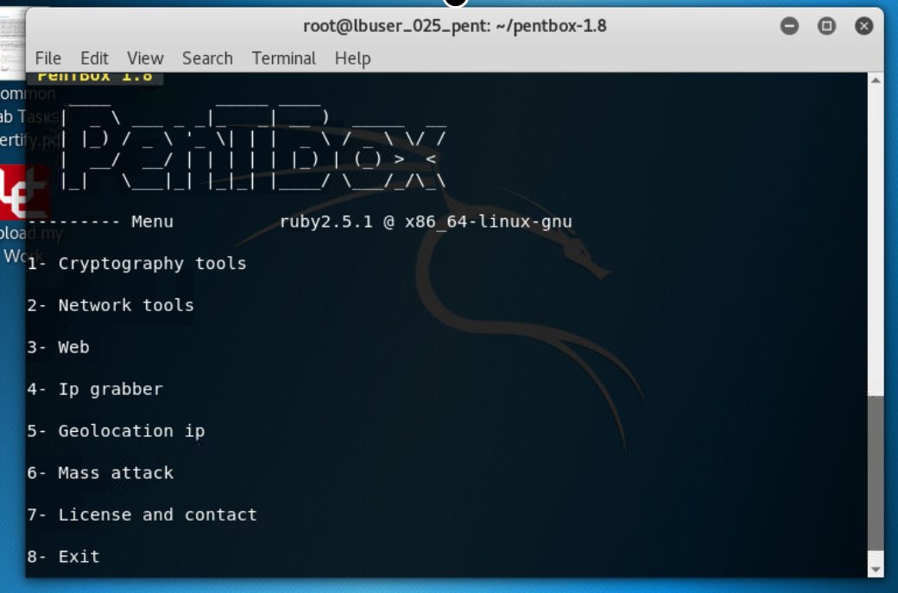
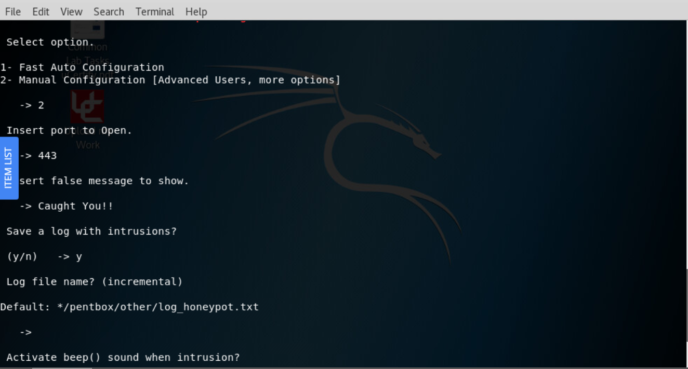
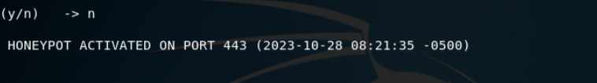
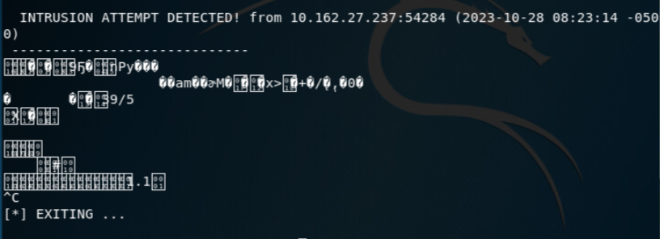

Honeypot
A cyber honeypot functions like a trap, luring hackers into a trap.
It's a dummy computer system meant to draw cyberattacks, serving as a sacrifice.
It imitates a hacker's target and takes advantage of their intrusion attempts to learn more about cybercriminals and their methods of operation,
or to divert their attention from other targets.
We start by Pentbox using cd:

We choose Network Tools/Honeypot:

Now the honeypot is activated:

Incase of any intrusion attempt you will receive this text:
